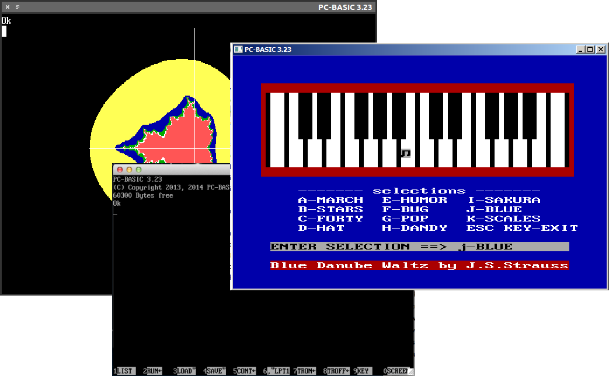
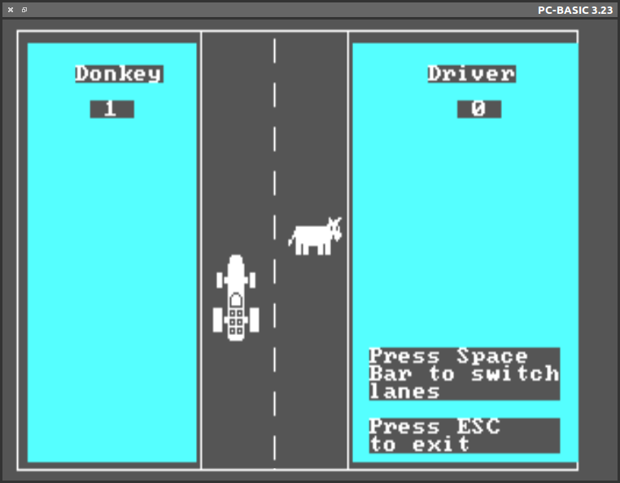

Cross-platform and
embarrassingly compatible

PC-BASIC aims for bug-for-bug compatibility with Microsoft GW-BASIC and runs everywhere Python does.
Find out moreThe power of 1980s technology — available here and now
Run classic games and legacy BASIC applications. PC‑BASIC supports Microsoft Binary Format floating point for full compatibility with GW-BASIC data files.
Get startedA range of hardware,
a range of BASIC dialects

PC-BASIC interprets GW-BASIC/BASICA and its IBM PCjr and Tandy 1000 extensions. PC-BASIC emulates PC-speaker as well as Tandy 3-voice sound and numerous video cards, including classic CGA, Hercules and Olivetti.